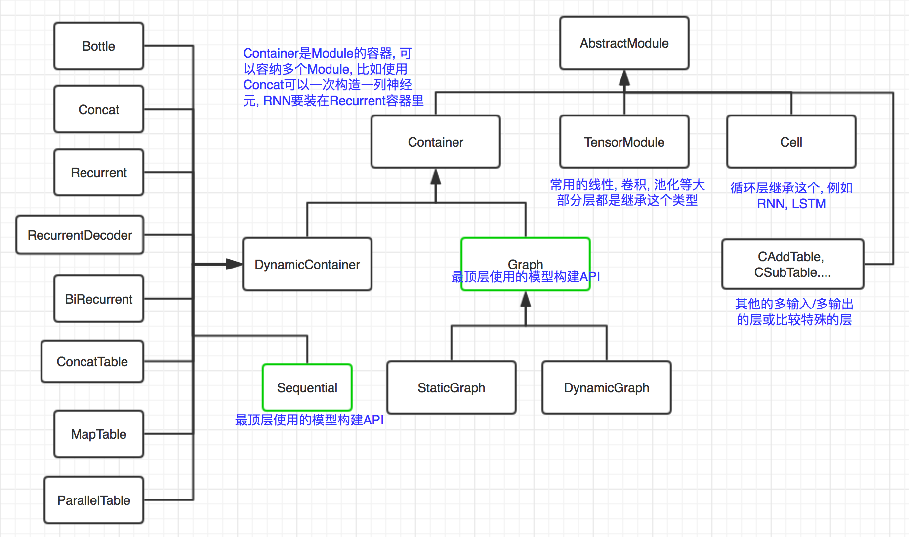

<!DOCTYPE html>
<html lang="en">

<head>
    <meta charset="utf-8">
    <meta http-equiv="X-UA-Compatible" content="IE=edge">
    <meta name="viewport" content="width=device-width, initial-scale=1.0">  
    <link rel="shortcut icon" href="../../img/favicon.ico">

    <title>Module - SparkDL</title>

    <link href="../../css/bootstrap-custom.min.css" rel="stylesheet">
    <link href="//maxcdn.bootstrapcdn.com/font-awesome/4.7.0/css/font-awesome.min.css" rel="stylesheet">
    <link rel="stylesheet" href="//cdn.jsdelivr.net/font-hack/2.018/css/hack.min.css">
    <link href='//fonts.googleapis.com/css?family=PT+Sans:400,400italic,700,700italic&subset=latin-ext,latin' rel='stylesheet' type='text/css'>
    <link href='//fonts.googleapis.com/css?family=Open+Sans:300italic,400italic,700italic,400,300,600,700&subset=latin-ext,latin' rel='stylesheet' type='text/css'>
    <link href="../../css/base.css" rel="stylesheet">
    <link href="../../css/cinder.css" rel="stylesheet">
    <link rel="stylesheet" href="../../css/highlight.css">

    <!-- HTML5 shim and Respond.js IE8 support of HTML5 elements and media queries -->
    <!--[if lt IE 9]>
            <script src="https://oss.maxcdn.com/libs/html5shiv/3.7.0/html5shiv.js"></script>
            <script src="https://oss.maxcdn.com/libs/respond.js/1.3.0/respond.min.js"></script>
        <![endif]-->

    <script src="https://ajax.googleapis.com/ajax/libs/webfont/1.5.18/webfont.js"></script>
    <script>
    WebFont.load({
        google: {
            families: ['Open Sans', 'PT Sans']
        }
    });
    </script>

    
</head>

<body>

    <div class="navbar navbar-default navbar-fixed-top" role="navigation">
    <div class="container">

        <!-- Collapsed navigation -->
        <div class="navbar-header">
            <!-- Expander button -->
            <button type="button" class="navbar-toggle" data-toggle="collapse" data-target=".navbar-collapse">
                <span class="sr-only">Toggle navigation</span>
                <span class="icon-bar"></span>
                <span class="icon-bar"></span>
                <span class="icon-bar"></span>
            </button>
            

            <!-- Main title -->

            <a class="navbar-brand" href="../..">SparkDL</a>
        </div>

        <!-- Expanded navigation -->
        <div class="navbar-collapse collapse">
                <!-- Main navigation -->
                <ul class="nav navbar-nav">
                
                
                    <li >
                        <a href="../..">Home</a>
                    </li>
                
                
                
                    <li class="dropdown active">
                        <a href="#" class="dropdown-toggle" data-toggle="dropdown">BigDL代码分析 <b class="caret"></b></a>
                        <ul class="dropdown-menu">
                        
                            
<li >
    <a href="../数据表示/">数据表示</a>
</li>

                        
                            
<li >
    <a href="../模型定义/">模型定义</a>
</li>

                        
                            
<li class="active">
    <a href="./">Module</a>
</li>

                        
                            
<li >
    <a href="../Transformer/">Transformer</a>
</li>

                        
                            
<li >
    <a href="../inference调用链分析/">Inference调用链分析</a>
</li>

                        
                            
<li >
    <a href="../forward/">Forward</a>
</li>

                        
                            
<li >
    <a href="../Tensor运算/">Tensor运算</a>
</li>

                        
                        </ul>
                    </li>
                
                
                </ul>

            <ul class="nav navbar-nav navbar-right">
                    <li>
                        <a href="#" data-toggle="modal" data-target="#mkdocs_search_modal">
                            <i class="fa fa-search"></i> Search
                        </a>
                    </li>
                    <li >
                        <a rel="next" href="../模型定义/">
                            <i class="fa fa-arrow-left"></i> Previous
                        </a>
                    </li>
                    <li >
                        <a rel="prev" href="../Transformer/">
                            Next <i class="fa fa-arrow-right"></i>
                        </a>
                    </li>
                    <li>
                        <a href="https://github.com/SparkDL/docs/edit/master/docs/BigDL/Module.md">Edit on SparkDL</a>
                    </li>
            </ul>
        </div>
    </div>
</div>

    <div class="container">
        
        <div class="col-md-3"><div class="bs-sidebar hidden-print affix well" role="complementary">
    <ul class="nav bs-sidenav">
        <li class="first-level active"><a href="#module">Module</a></li>
            <li class="second-level"><a href="#container-sequenstial-graph">Container, Sequenstial, Graph</a></li>
                
            <li class="second-level"><a href="#abstractmodule">AbstractModule</a></li>
                
            <li class="second-level"><a href="#tensormodule">TensorModule</a></li>
                
            <li class="second-level"><a href="#_1">例子</a></li>
                
    </ul>
</div></div>
        <div class="col-md-9" role="main">

<h1 id="module">Module</h1>
<p><code>Module</code>是BigDL中网络构建的基本单位，网络的每一种层都实现为一个<code>Module</code>.</p>
<p>首先来看一下Module的继承体系.</p>
<p></p>
<p>说明一下, 最底层的是<code>AbstractModule</code>抽象类, 这是所有<code>Module</code>的基类.</p>
<p>然后是它的一个子类<code>TensorModule</code>, 这也是一个抽象类, 大部分层都是继承这个类, 比如全连接, 卷积等.</p>
<p>另外它还有几个子类</p>
<ul>
<li><code>Container</code> Module的容器, 可以理解为把多个Module打包成一个</li>
<li><code>Cell</code> 为循环神经元设计的, 比如RNNCell, LSTMCell都继承自这个类</li>
<li><code>CAddTable</code>, <code>CSubTable</code>... 这是其他的多输入多输出的比较特殊的Module</li>
</ul>
<h2 id="container-sequenstial-graph">Container, Sequenstial, Graph</h2>
<p>请参考 <a href="https://bigdl-project.github.io/0.4.0/#APIGuide/Layers/Containers/">Containers</a></p>
<p>注意这里有两个比较特殊的容器, <code>Sequenstial</code>和<code>Graph</code>, 这是我们构建模型的顶层API.</p>
<p>再来回顾一下<a href="../模型定义/">模型定义</a>的两种方式.</p>
<p>采用Sequential的形式定义为：</p>
<pre><code class="scala">val model = Sequential()
model.add(Linear(...))
model.add(Sigmoid())
model.add(Softmax())
</code></pre>

<p>Functional的形式为：</p>
<pre><code class="scala">val linear = Linear(...).inputs()
val sigmoid = Sigmoid().inputs(linear)
val softmax = Softmax().inputs(sigmoid)
val model = Graph(Seq[linear], Seq[softmax])
</code></pre>

<p>前者是向<code>Sequential</code>容器内不断添加新的层, 后者则是使用各模块本身的<code>inputs</code>方法连接起来, 最后使用输入节点和输出节点构建一个<code>Graph</code>.</p>
<h2 id="abstractmodule">AbstractModule</h2>
<p><code>com.intel.analytics.bigdl.nn.abstractnn</code>包内定义了<code>AbstractModule</code>，它是所有<code>Module</code>的原始基类：</p>
<pre><code class="scala">package com.intel.analytics.bigdl.nn.abstractnn
/**
 * Module is the basic component of a neural network. It forward activities and backward gradients.
 * Modules can connect to others to construct a complex neural network.
 *
 * @tparam A Input data type
 * @tparam B Output data type
 * @tparam T The numeric type in this module parameters.
 */
abstract class AbstractModule[A &lt;: Activity: ClassTag, B &lt;: Activity: ClassTag, T: ClassTag](
  implicit ev: TensorNumeric[T]) extends Serializable with InferShape
</code></pre>

<p>这是个泛型类，<code>Abstract[A,B,T]</code>，有3个参数<code>A,B,T</code>，<code>A</code>是输入的类型，<code>B</code>是输出的类型，都要求是<code>Activity</code>的子类，然后<code>T</code>是此Module使用参数的类型，可以是<code>Double</code>或者<code>Float</code>.</p>
<p>一个<code>Module</code>的核心功能肯定是前向传播进行推断和反向传播更新梯度, 分别对应<code>forward</code>和<code>backward</code>方法, 这两个方法是给出具体实现了的:</p>
<pre><code class="scala">  /**
   * Takes an input object, and computes the corresponding output of the module. After a forward,
   * the output state variable should have been updated to the new value.
   *
   * @param input input data
   * @return output data
   */
  final def forward(input: A): B = {
    val before = System.nanoTime()
    try {
      updateOutput(input)
    } catch {
      case l: LayerException =&gt;
        l.layerMsg = this.toString() + &quot;/&quot; + l.layerMsg
        throw l
      case e: Throwable =&gt;
        throw new LayerException(this.toString(), e)
    }
    forwardTime += System.nanoTime() - before

    output
  }

  /**
   * Performs a back-propagation step through the module, with respect to the given input. In
   * general this method makes the assumption forward(input) has been called before, with the same
   * input. This is necessary for optimization reasons. If you do not respect this rule, backward()
   * will compute incorrect gradients.
   *
   * @param input input data
   * @param gradOutput gradient of next layer
   * @return gradient corresponding to input data
   */
  def backward(input: A, gradOutput: B): A = {
    val before = System.nanoTime()
    updateGradInput(input, gradOutput)
    accGradParameters(input, gradOutput)
    backwardTime += System.nanoTime() - before

    gradInput
  }
</code></pre>

<p>暂时可以只关注<code>forward</code>方法, 可以发现它就是调用了<code>updateOutput(input)</code>, 然后做一些统计工作. </p>
<pre><code class="scala">  /**
   * Computes the output using the current parameter set of the class and input. This function
   * returns the result which is stored in the output field.
   *
   * @param input
   * @return
   */
  def updateOutput(input: A): B
</code></pre>

<p>这是个抽象方法, 留给子类去实现. 我们继承这个类然后实现这个方法即可实现前向传播进行inference了.</p>
<h2 id="tensormodule">TensorModule</h2>
<p>上面定义了Module的抽象类, 然后BigDL具体使用的是它的一个子类<code>TensorModule[T]</code>, 分别将<code>AbstractModule</code>的三个参数类型设为<code>Tensor[T], Tensor[T], T</code>, 也就是输入输出都是<code>Tensor</code>类型, 这样就可以把具体的计算过程全部使用<code>Tensor</code>的运算实现.</p>
<pre><code class="scala">/**
 * [[TensorModule]] is an abstract sub-class of [[AbstractModule]], whose
 * input and output type both are [[Tensor]].
 *
 * @tparam T The numeric type in this module parameters
 */
abstract class TensorModule[T: ClassTag]
  (implicit ev: TensorNumeric[T]) extends AbstractModule[Tensor[T], Tensor[T], T]
</code></pre>

<h2 id="_1">例子</h2>
<p>看一个最简单的例子, <code>Add</code>层, 它简单的将每个输入各加上一个值: </p>
<pre><code class="scala">/**
 * adds a bias term to input data ;
 *
 * @param inputSize size of input data
 */
@SerialVersionUID(4268487849759172896L)
class Add[T: ClassTag](val inputSize: Int
  )(implicit ev: TensorNumeric[T]) extends TensorModule[T] with Initializable {

  val bias = Tensor[T](inputSize)

  override def updateOutput(input: Tensor[T]): Tensor[T] = {
    output.resizeAs(input).copy(input)
    if (input.isSameSizeAs(bias)) {
      output.add(bias)
    } else {
      val batchSize = input.size(1)
      ones.resize(batchSize).fill(ev.one)
      val biasLocal = bias.view(bias.size.product)
      val outputLocal = output.view(batchSize, output.size.product/batchSize)
      outputLocal.addr(ev.fromType[Int](1), ones, biasLocal)
    }
    output
  }
</code></pre>

<p><code>output</code>和<code>bias</code>都是一个<code>Tensor</code>类的对象, 如果二者的尺寸相同的话, 直接调用Tensor的add方法</p>
<pre><code class="scala">output.add(bias)
</code></pre>

<p>就可以得到输出.</p></div>
        
    </div>

    <footer class="col-md-12 text-center">
        <hr>
        <p>
        <small>Documentation built with <a href="http://www.mkdocs.org/">MkDocs</a>.</p></small>
    </footer>

    <script src="../../js/jquery-1.10.2.min.js"></script>
    <script src="../../js/bootstrap-3.0.3.min.js"></script>
    <script src="../../js/highlight.pack.js"></script>
    <script>hljs.initHighlightingOnLoad();</script>
    <script>
    var base_url = '../..';
    </script>
    <script data-main="../../mkdocs/js/search.js" src="../../mkdocs/js/require.js"></script>
    <script src="../../js/base.js"></script>
    <script src="../../search/require.js"></script>
    <script src="../../search/search.js"></script>

    <div class="modal" id="mkdocs_search_modal" tabindex="-1" role="dialog" aria-labelledby="Search Modal" aria-hidden="true">
        <div class="modal-dialog">
            <div class="modal-content">
                <div class="modal-header">
                    <button type="button" class="close" data-dismiss="modal">
                        <span aria-hidden="true">&times;</span>
                        <span class="sr-only">Close</span>
                    </button>
                    <h4 class="modal-title" id="exampleModalLabel">Search</h4>
                </div>
                <div class="modal-body">
                    <p>
                        From here you can search these documents. Enter your search terms below.
                    </p>
                    <form role="form">
                        <div class="form-group">
                            <input type="text" class="form-control" placeholder="Search..." id="mkdocs-search-query">
                        </div>
                    </form>
                    <div id="mkdocs-search-results"></div>
                </div>
                <div class="modal-footer">
                </div>
            </div>
        </div>
    </div>

    </body>

</html>
